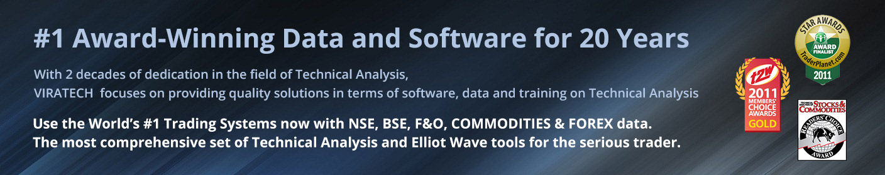
Enter your trades with your "Eyes Wide Open." Know where your Entry, Exit, Support and Resistance areas are before you enter into your trade. Use Advanced GET's exclusive rule-based approaches to qualify and quantify your trades.
- Xpert Trend Locater
- Highly effective NEW Dashboard strategies
- Hi-power Elliot Wave Analysis
- Keltner Channel, Average True Range, Choppiness, Donchian Channels
- Optimized Indicators & Specialty Tools including.TJ's Ellipse, False Bar Stochastics, TJ's MOB, TJ's Web
- All THE POWER IN ONE SINGLE PACKAGE. Dow, Fibonacci, Gann, Elliot Wave
- Advanced Scanning and so much more..
Advanced GET allows you to approach your trading with a new sense of purpose. Whether you are an experienced trader looking for one more edge to compliment your existing trading, a beginner looking for an objective rule based approach, or just simply looking for a trader friendly charting package, Advanced GET can fulfill your needs. Whether you trade Tick charts, Minute bars or Daily Bars; Mutual Funds or Currencies, Stocks or Spreads, Advanced GET is the software for the serious trader.
Advanced GET offers the most comprehensive set of technical analysis tools that you will ever find in a single package. Although Elliott Wave analysis has been Advanced GET's claim to fame, it is not the only thing that Advanced GET excels in. Take a look at our demo to find out what else Advanced GET has to offer.
The software is used by professional traders and institutions in all 50 states of the U.S. and in 50 countries around the world. Advanced GET has won the Stocks and Commodities Magazine's Readers' Choice Award for Trading Systems for both STOCKS and COMMODITIES 12 years in a row. That's because Advanced GET is designed by traders who put their money on the line everyday, and demand nothing less than the best.
eSignal, Advanced GET Edition Features:
- Auto Gann
- Auto Trend Channels
- Bias Reversal
- Elliott Oscillator
- Elliott Trigger
- Elliott Waves
- Ellipse
- EXpert Trend Locater (XTL)
- False Bar Stochastic
- Gann Angles
- Gann Box
- Joseph Trend Index (JTI)
- Make-or-Break (MOB)
- Moving Average
- Optimized Parabolic SAR
- Profit-Taking Index (PTI)
- Price Clusters
- Smart Pivots
- Time and Price Squares
- Time Clusters
- TJ's Web
- Trade Profile
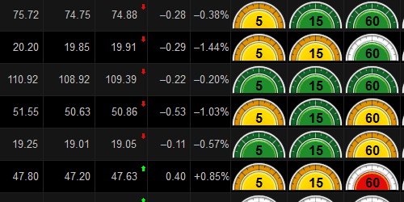
Advanced GET Dashboard
With its easy-to-understand, color-coded display, the Advanced GET Dashboard assists you in judging how your chosen stocks are likely to move. Easily spot Advanced GET's signature Type 1 and 2 set-ups and get instant access to 100s of associated charts from a single window. Customize to display your required chart intervals and place any number of gauges per row (up to 100 per page). Compress the charts you need into one compact area in your pages or layouts. Apply Time Templates to regulate the session hours used for a chosen strategy. The dynamic quote list capability allows you to import symbols on the fly and "grab" symbol updates from scans outside of eSignal, Advanced GET Edition.
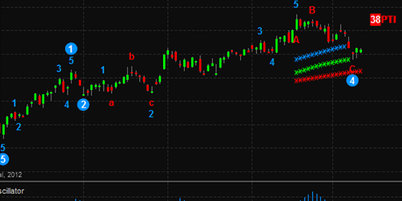
Elliott Waves
Advanced GET is the fastest and most powerful computerized Elliott Wave model available to the public anywhere in the world. The advanced mathematical model compares the current market with historical patterns and statistical behavior to generate objective and precise Elliott wave counts that eliminate ambiguity. A special feature of the GET Elliott Waves automatically provides price projections showing the most likely price range that a wave will reach. For the experienced user, a cross-referencing feature allows Elliott Wave counts from one time frame to be displayed on a chart of a different time frame. And, for the professional user, Advanced GET can generate alternate counts for second opinions at crucial junctures.
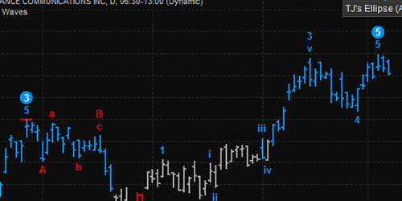
Ellipse
Based on Gann theory, this dynamic tool harnesses the power of Gann without the complexity of the Gann box, so you can easily identify key areas of support and resistance for market corrections, as well as providing initial trade targets.
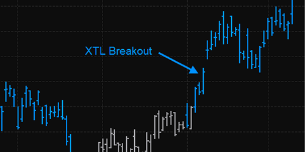
eXpert Trend Locator (XTL)
This study uses a statistical evaluation of the market to help you detect random market moves (noise) from powerful market trends.
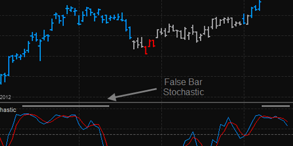
False Bar Stochastic
The appearance of this special, built-in feature of the GET Stochastic means that the overbought / oversold indication of the standard Stochastic is questionable. So, for example, for an "overbought" market, the false bar indicates that the market actually has a chance of moving higher. Where the false (black) bar does not appear, the overbought / oversold conditions of the Stochastic can be considered higher-probability reversal areas and, thus, trading opportunities.
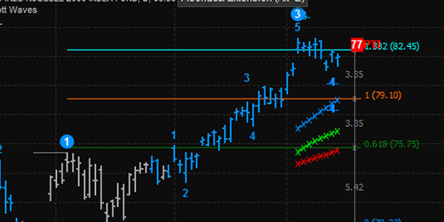
Fibonacci Tools
Fibonacci retracements, extensions and circles allow you to measure traditional Fibonacci ratios in time and price, as well as create your own ratios.
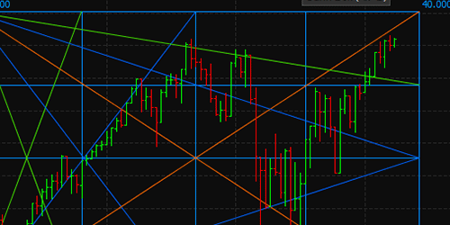
Gann Box / Angles
These tools measure time and price via angles in the market's movements. The Gann box is for more advanced users looking to further define precise areas of market congruence and change for both forecasting and trade defense.
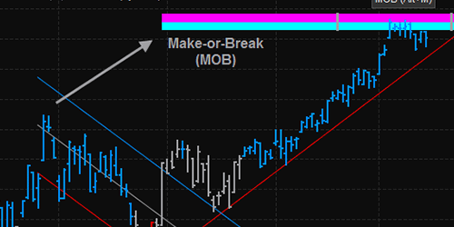
Make-or-Break (MOB)
Before you enter a trade, you need to know your profit target. The MOB is our proprietary tool that helps identify future market time and price levels.
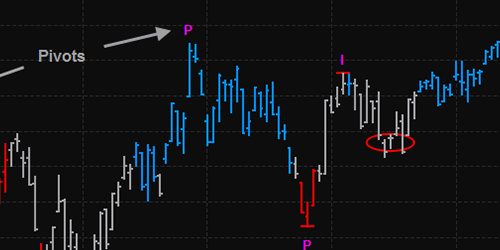
Pivots
Designed to quickly identify key swing reversal points on a chart, the pivots help you identify the magnitude of the different market turning points. In addition, you use the pivots as anchor points with the Advanced GET specialized drawing tools, such as the Ellipse, MOB, Gann and Fibonacci levels.
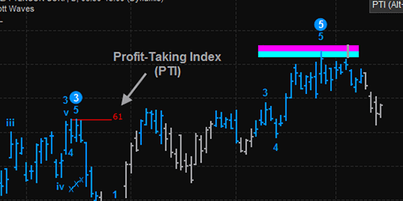
Profit-Taking Index (PTI)
The Wave Four PTI can help forecast whether the market will complete Elliott Wave 5, so you can spot the best Elliott patterns. Historically, if the PTI is greater than 35 in a wave four, the market continues to make new highs in wave five. Conversely, a PTI of less than 35 indicates too much profit-taking and signals a double top or failed fifth in wave five.
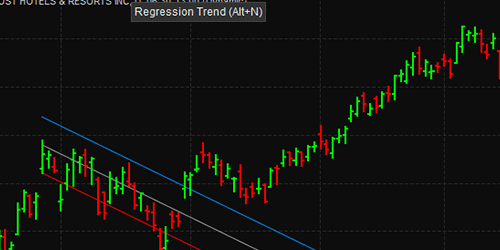
Regression Trend Channels
The Wave Four PTI can help forecast whether the market will complete Elliott Wave 5, so you can spot the best Elliott patterns. Historically, if the PTI is greater than 35 in a wave four, the market continues to make new highs in wave five. Conversely, a PTI of less than 35 indicates too much profit-taking and signals a double top or failed fifth in wave five.
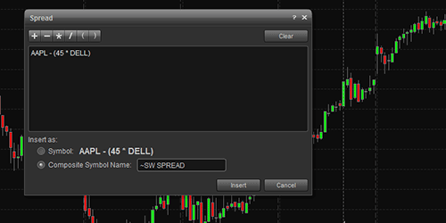
Spreads
Advanced GET is capable of creating complex spreads using two or three markets. You can add, subtract or divide any number of contracts, and it remembers the spreads you create. And, once you create the spread, Advanced GET will treat it like any other market data. This means you can perform Elliott Wave analysis or apply any other tool, indicator or study available from Advanced GET.
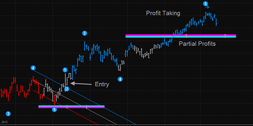
Type 1 Trades and Type 2 Trades
Type 1 Trades
Used for buying at the end of a fourth-wave retracement Rules:
- Wait for the Elliott Oscillator to pull back to zero. Historically, this happens 94% of the time in wave four retracements.
- Make sure the Profit-Taking Index (PTI) is greater than 35. A PTI greater than 35 indicates a good possibility of new highs in wave five.
- When prices break the channel, buy the market for a wave five rally.
Type 2 Trades
Used for selling at the end of a fifth-wave rally Rules:
- When wave five makes new highs, make sure the Elliott Oscillator shows divergence with its wave three peak. 94% of the time, this oscillator should pull back to zero in wave four.
- When five waves are complete, the market changes trend. Wait for the price to cross the channels and sell the market.
- The initial target is the previous wave four.
VIRATECH Extra's :
Purchasing Advanced GET from Viratech does gives you some BIG perks, here are some valuable extras you get that will spur your performance...
- Preset Indicator defaults and settings
- Customized Style and Time Templates
- Handy sample pages with Indian Stocks & Sectors pre-set
- Free access to Exclusive Viratech indicators and strategies that even mark buy and sell signals in real time(worth $1200 annually)
- Access to our 3 Day Workshop conducted at a 5 Diamond hotel (includes LIVE Training)
- Local backup support via our 6 branch offices
- Free One to one Training sessions on program operation and interpretation
Training is a key aspect when it comes to Advanced GET and Viratech is very specialized and proven in this area. It would not be out of place to say, that's what makes us one of the largest sellers for Advanced GET in the world for over “two” decades.
The Right Tools for
Right Trades
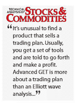